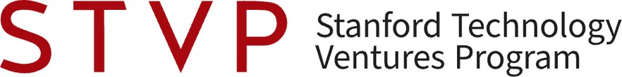
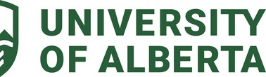
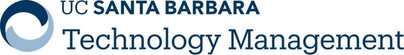
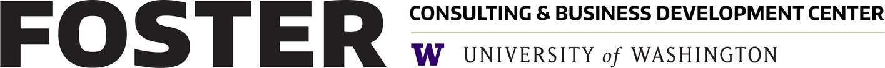
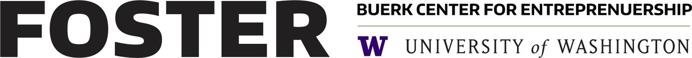

People
The steering committee and the sponsoring schools
WCRS is run by faculty from its six sponsoring schools. Names link to school directory pages.
Steering committee, 2026
Riitta KatilaStanford University
Michael LounsburyUniversity of Alberta
Vern GlaserUniversity of Alberta
Christine BeckmanUC Santa Barbara
Mary TripsasUC Santa Barbara
Andrew NelsonUniversity of Oregon
Shon HiattUniversity of Southern California
Emily Cox PahnkeUniversity of Washington
Founders and early conveners
Suresh KothaUniversity of Washington · Founder, 2003
Kathleen EisenhardtStanford University · Founder, 2003
Alan MeyerUniversity of Oregon · Founder, 2003
Nandini RajagopalanUniversity of Southern California · Joined 2005
Sponsors
Six schools, seven sponsoring units

Stanford Technology Ventures ProgramStanford University
Alberta School of BusinessUniversity of Alberta
Technology Management ProgramUC Santa BarbaraLundquist Center for EntrepreneurshipUniversity of OregonLloyd Greif Center for Entrepreneurial StudiesUniversity of Southern California
Consulting & Business Development Center, Foster School of BusinessUniversity of Washington
Buerk Center for Entrepreneurship, Foster School of BusinessUniversity of WashingtonContact
Who to ask
West Coast Research Symposiumwcrs@uw.edu · general enquiries, submissions, and this website
Vern GlaserUniversity of Alberta · Conference and registration, 2026
Registration for each symposium runs through the host school. Steering committee members for each school are listed above.